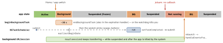

ios-platform · folio
In one line: After the user leaves, an app gets a few seconds and is then
suspended: in memory, no CPU. Every way of running later is either a
short grant (beginBackgroundTask), a request the
system schedules when it chooses (BGTaskScheduler, silent push), a
hand-off to a daemon (background URLSession), or a
declared mode that holds only while it is really in use (audio,
location, …). None of them is guaranteed.
Download PDF Print view LaTeX source


How it works
- States: Not running · Inactive · Active · Background (running, off screen) · Suspended (in memory, threads frozen). A suspended app can be purged with no callback, so save state on entering the background.
beginBackgroundTask: time to finish a save or upload, ~30 s (backgroundTimeRemainingis an estimate). Every begin needs anendBackgroundTask, also in the expiration handler.- BGTaskScheduler (iOS 13):
BGAppRefreshTask= short (~30 s), keeps content fresh;BGProcessingTask= minutes, deferrable maintenance (DB clean-up, ML), usually idle/overnight, can setrequiresExternalPower/requiresNetworkConnectivity. Needs the identifiers in Info.plistBGTaskSchedulerPermittedIdentifiers, background modefetchand/orprocessing, andregisterfor each before launch finishes (iOS may launch the app only to run it). Tasks are one-shot, so re-submit. The system decides when, from app usage, battery, Low Power Mode and the Background App Refresh switch. BGContinuedProcessingTask(iOS 26): user-started work (export) that starts in the foreground and goes on in the background;ProgressReportingshown in a cancellable Live Activity; little progress = terminated first; GPU needs an entitlement.- Background
URLSession:.background(withIdentifier:)config, delegate-based (no completion handlers), uploads from a file. The daemon transfers, then relaunches the app inhandleEventsForBackgroundURLSession: store its handler, recreate the session with the same id, call the handler on main afterurlSessionDidFinishEvents.isDiscretionarylets iOS wait for Wi-Fi and power. - Background modes (
UIBackgroundModes):audio,location,voip(PushKit + CallKit),bluetooth-central/-peripheral,remote-notification,external-accessory,fetch,processing. The continuous ones hold only while doing that work. Silent push (content-available:1, priority 5) = a throttled server-side wake for ~30 s.
Which tool for which job
| finish a save on leaving | beginBackgroundTask |
| fresh content at next open | BGAppRefreshTask |
| nightly DB / ML clean-up | BGProcessingTask |
| user-started export | BGContinuedProcessingTask (26) |
| download 1 GB | background URLSession |
| server says “new data” | silent push (throttled) |
| playing, navigating, calling | the matching background mode |
What gets you killed
- Jetsam: memory pressure; background/suspended and big apps go first, with no callback. Keep the background footprint small.
- Watchdog (
0x8badf00d): main thread blocked too long (slow launch, sync I/O), or a background task never ended. 0xdead10cc: suspended while holding a file lock (SQLite in an App Group). Wrap the write in a background task.- Too much background CPU, or a faked mode (silent audio).
Example
let bg = BGTaskScheduler.shared, rid = "com.you.refresh"
// in didFinishLaunching, BEFORE it returns:
bg.register(forTaskWithIdentifier: rid, using: nil) {
handle($0 as! BGAppRefreshTask) }
func schedule() {
let r = BGAppRefreshTaskRequest(identifier: rid)
r.earliestBeginDate = .now + 15 * 60 // not before; no promise
try? bg.submit(r) }
func handle(_ task: BGAppRefreshTask) {
schedule() // one-shot: re-arm first
let t = Task { task.setTaskCompleted(success: await sync()) }
task.expirationHandler = { t.cancel() } }
var id = UIBackgroundTaskIdentifier.invalid // finish a save
id = app.beginBackgroundTask { app.endBackgroundTask(id) }
store.save { app.endBackgroundTask(id) }Debug (the debugger stops tasks running): pause, then in LLDB
e -l objc -- (void)[[BGTaskScheduler sharedScheduler]
_simulateLaunchForTaskWithIdentifier:@"com.you.refresh"]
(_simulateExpiration… tests the expiration handler).
Traps
- “My BG task never runs”: running under the debugger, never re-submitted, identifier missing from Info.plist, registered too late, user rarely opens the app, Low Power Mode, or Background App Refresh is off.
earliestBeginDateis a not-before date, not a schedule.- After the user force-quits (swipe up): no BG tasks, no silent push, and pending background-session transfers are cancelled. VoIP PushKit still works.
- On a background-session relaunch, recreate the session with the same identifier or its delegate events are never delivered.
- Skipping
setTaskCompletedor the URLSession handler costs future background time. beginBackgroundTaskis for finishing, not polling (was ~3 min, now ~30 s).
Remember
Grant · Request · Hand-off · Mode — none is a promise.